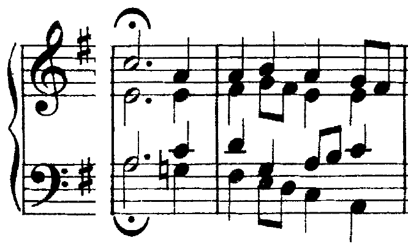

Il V⁴₃ e il V⁴₂ nei levare di BWV 133/6
Il corale guida dell’unità comincia con un V⁴₃. Nel levare il basso sale re–mi e prosegue al fa♯: sul mi (secondo ottavo) l’accordo è mi–la–do♯–sol, con la settima al soprano; sulla b. 1 il I⁶. La settima sale (sol–la), a decime parallele con il basso mi–fa♯: è il caso, raro, in cui nel I–V⁴₃–I⁶ «the 7th of the V⁴₃ moves up», «probably to create the parallel 10ths» (Kostka, Tonal Harmony, p. 211). Sul terzo movimento della b. 1 il tenore scende sotto il basso; sull’ultimo arriva la V⁷ incompleta, che risolve sulla tonica completa.

- ① V43
- ② b. 1: I⁶
- ③ b. 1: V⁷
- ④ b. 2: I
Lo stesso corale ha un V⁴₂ nel levare della quarta frase. Alla b. 8 la frase si ferma sul V; sull’ultimo movimento il basso scende al sol sotto la–do♯–mi: V⁴₂. Il sol scende al fa♯ e la b. 9 comincia sul I⁶, come vuole la regola del terzo rivolto.

- ① b. 8: V
- ② b. 8: V42
- ③ b. 9: I⁶
Il V⁶₅ alla cadenza: BWV 154/8
Nel corale BWV 154/8 il basso scende per crome in tutta la b. 7; sull’ultimo ottavo arriva il do♯, la sensibile, mentre il soprano tiene il sol, il contralto ha il mi, il tenore il la: V⁶₅. Alla b. 8 il do♯ sale al re, il sol scende al fa♯, il la del tenore resta: «la fondamentale rimane legata» (Marenco, p. 75).

- ① b. 7: V65
- ② b. 8: I
Si ascoltano le bb. 7–8 seguendo il basso: la discesa in crome, poi il do♯–re. Al secondo ascolto si segue il soprano e si canta a mezza voce il sol–fa♯ della settima.